Eighty images, pulled from three years of posting: event posters, radio covers, night work on 35mm, and slower film. They are the working archive behind the positions on the front page.
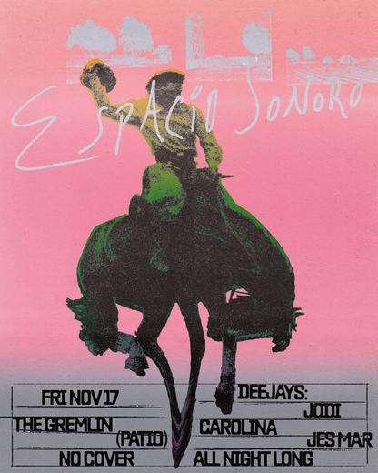
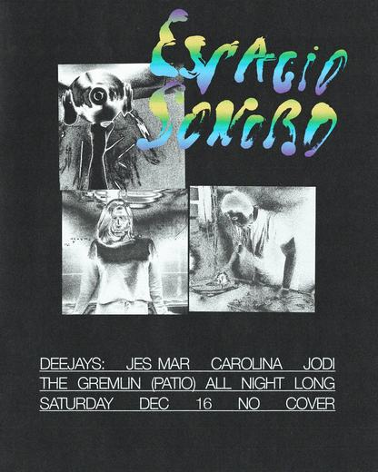
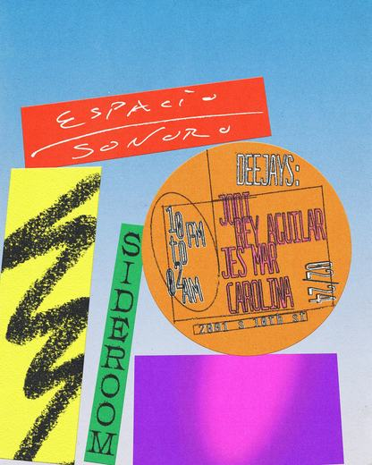
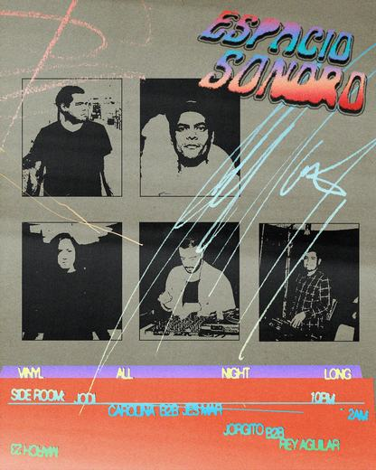
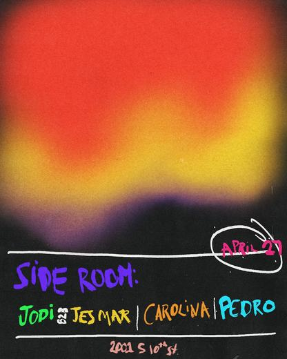
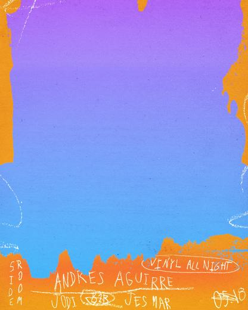
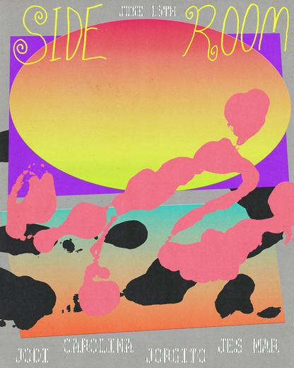
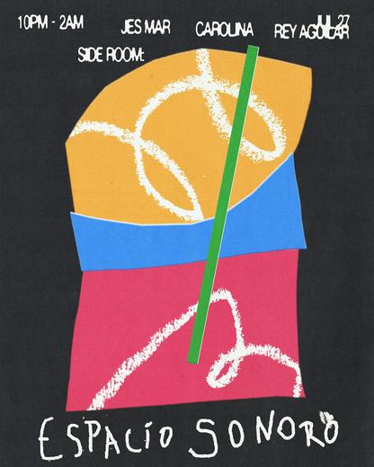
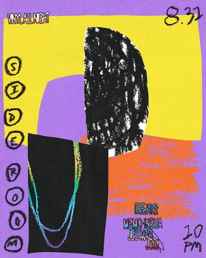
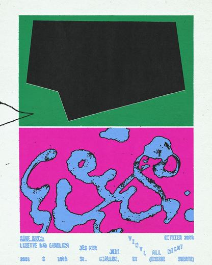
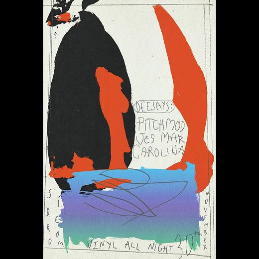
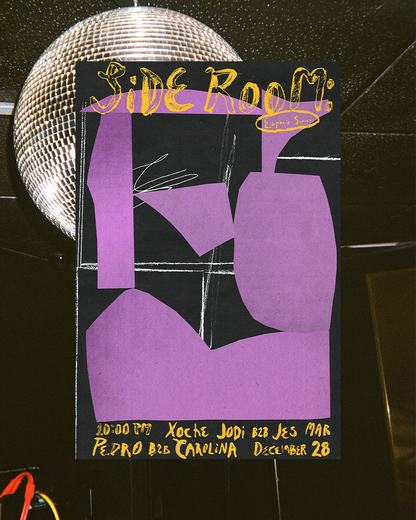
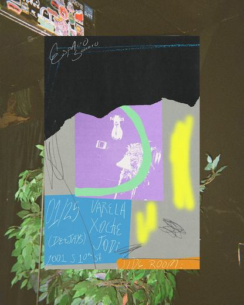
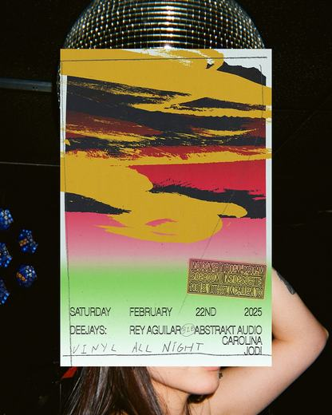
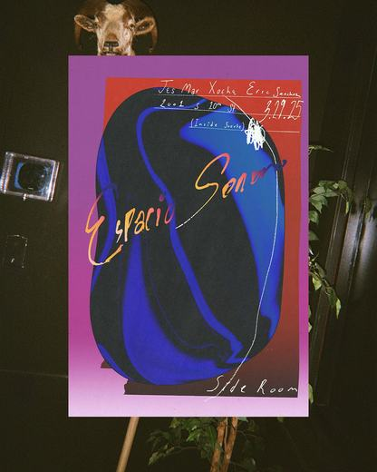
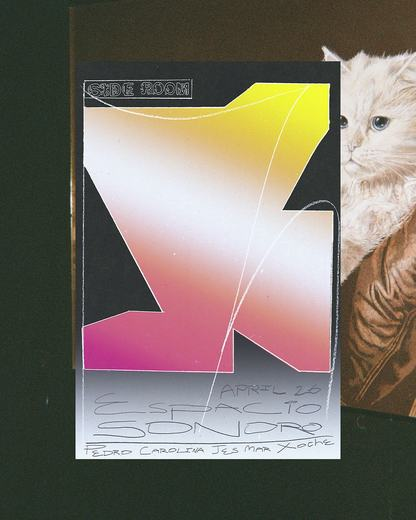
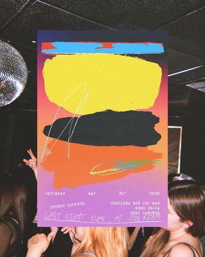
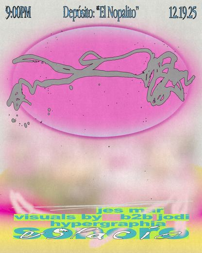
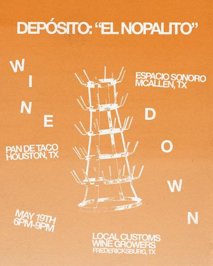
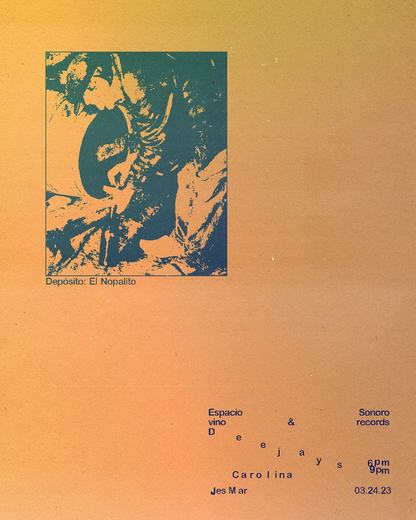
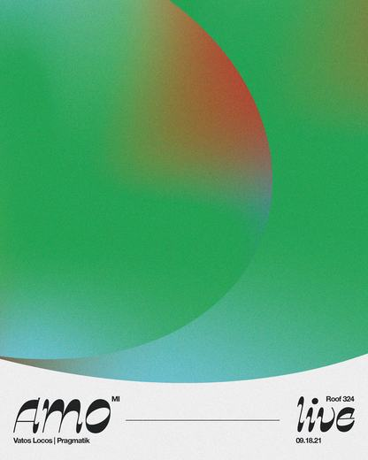
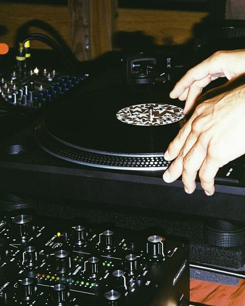
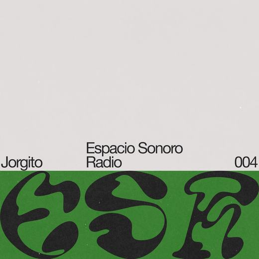
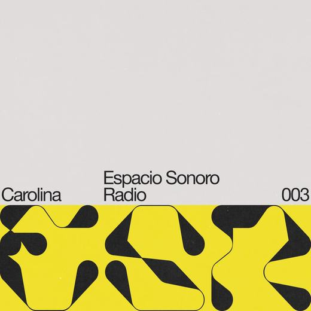
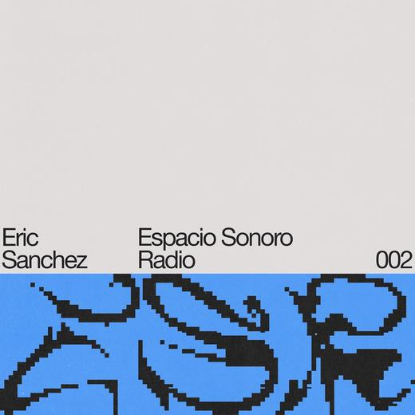


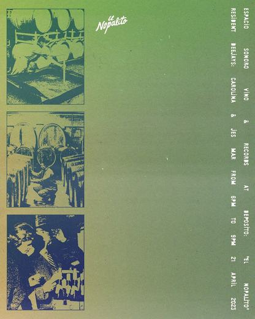

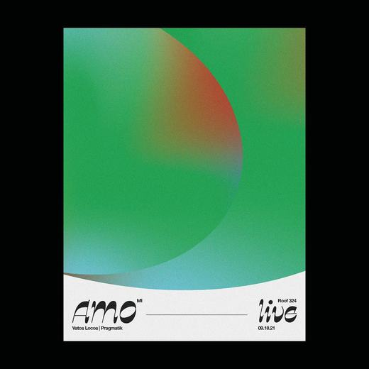

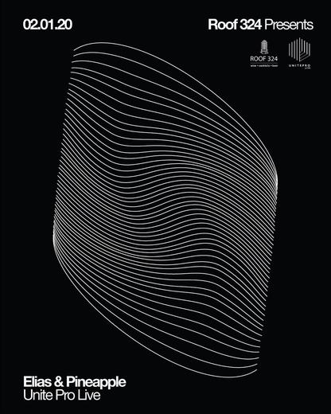

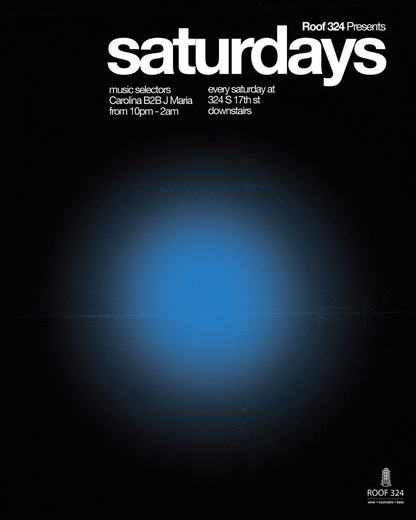
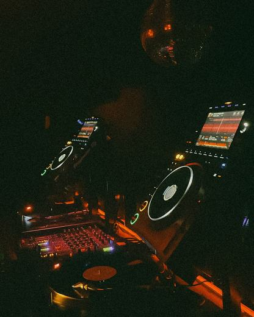
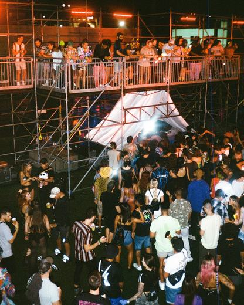
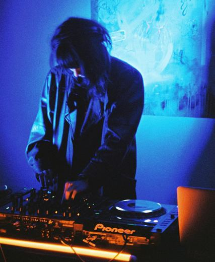
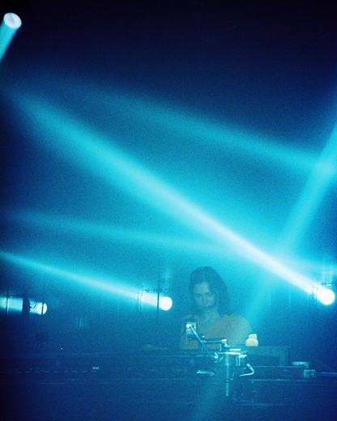
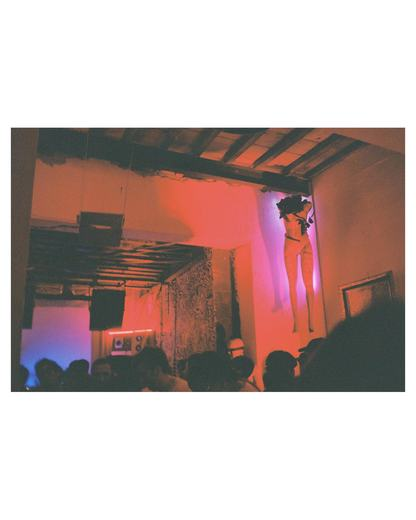
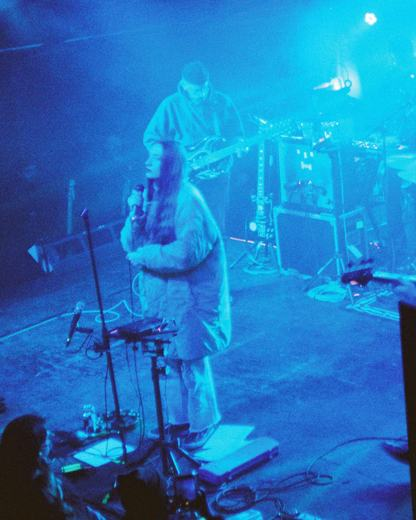
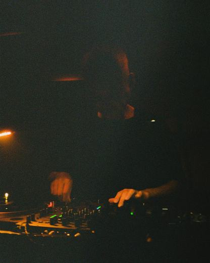
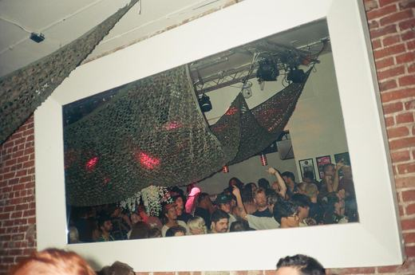
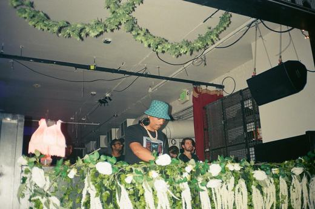
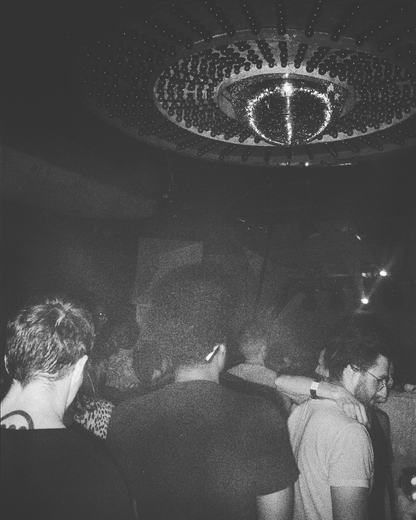
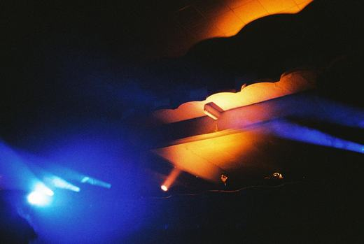
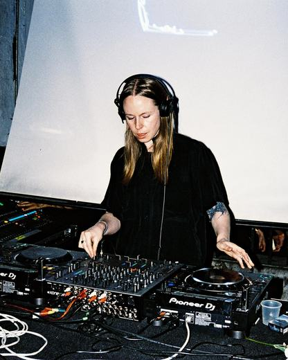
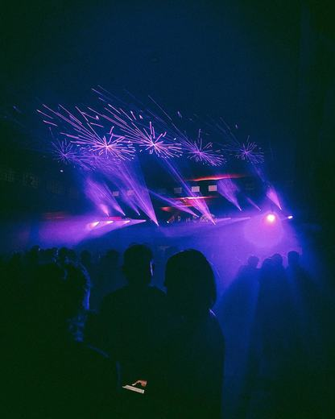
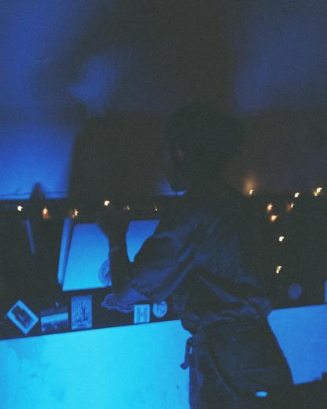
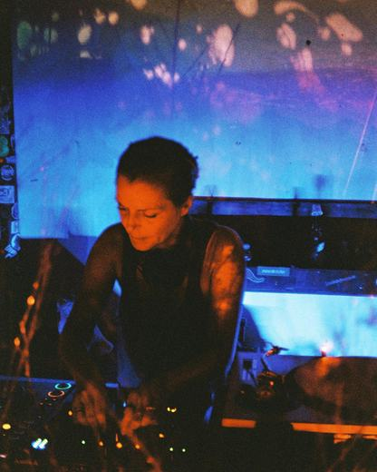
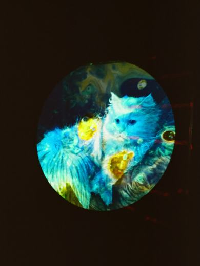
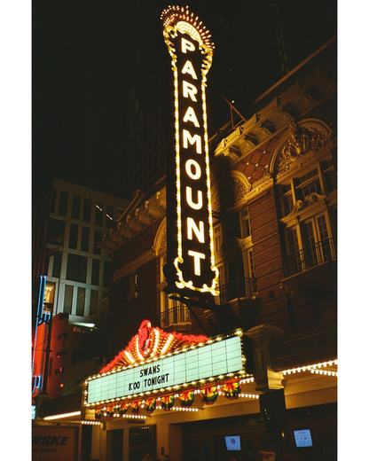

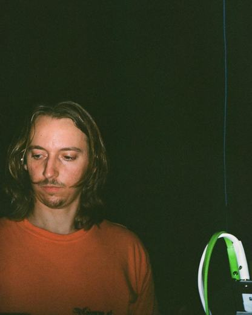